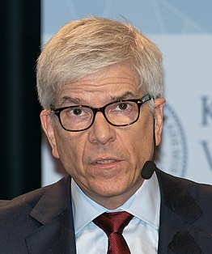
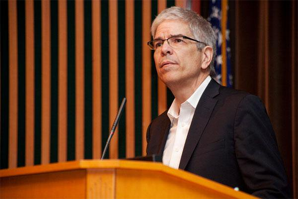

Paul Romer se licenció en matemáticas en 1977 en la Universidad de Chicago, universidad donde logró el grado de doctor (Ph.D.) en economía en 1983. Ha sido profesor en la Universidad de California en Berkeley, la Universidad de Chicago y la Universidad de Rochester. Paul Romer es hijo del exgobernador de Colorado Roy Romer. Ya en 1997 fue considerado como una de las 25 personas más influyentes de Estados Unidos de América por la revista Time. En 2002 fue galardonado con el Premio Horst Claus Recktenwald en Economía.
Teoría del crecimiento endógeno
Una de las líneas de investigación más importante de Romer es el crecimiento económico, tema que los economistas han estudiado extensamente entre las décadas de 1950 y 1960.15 El modelo de crecimiento Solow-Swan consideró el progreso tecnológico como aspecto más importante del aumento sostenido en la productividad por trabajador. La tesis de Romer, leída en 1983 y supervisada por José Scheinkman y Robert Lucas Jr., mostró representaciones matemáticas de modelos económicos en los que el cambio tecnológico es consecuencia de una acción promovida y coordinada tanto en el campo de la investigación como del desarrollo.
Nobel de Economía: quién es Paul Romer, ganador del premio y por qué provocó que Chile llamara "inmoral" al Banco Mundial
La primera y más relevante para este galardón, ha sido su aportación al entendimiento del papel de las innovaciones tecnológicas en el crecimiento económico. Por más de dos siglos, la economía mundial ha exhibido tasas ascendentes de progreso, las cuales desafían la escasez de los recursos y el aumento de la población. Los modelos teóricos de mediados del siglo pasado postulaban que el dinamismo del producto por trabajador era resultado de la acumulación de capital, que eventualmente se extinguía porque los rendimientos de este factor eran decrecientes. Se estableció entonces que la clave del avance era el cambio tecnológico, porque incrementaba la productividad de los insumos. Sin embargo, tal elemento era “exógeno” y no se esclarecía su origen.